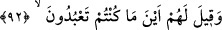

kendisine atıf yapılan fiilin muzârî sıygasında olması, sürekli ve devamlı olarak
faydanın olmadığına delâlet etmek içindir.
Yâni cennet, küfür ve masıyetten sakınan müttakilere onu bulundukları yerden rahatça
görecekleri, çeşitli güzelliklerine vâkıf olacakları ve orada toplanacakları için
sevinecekleri kadar yaklaştırılmıştır.
el-Bahr’da der ki: “Cennet onlara yaklaştırılır. Çünkü onlar, Allah Teâlâ’ya yakın
oldukları için ondan uzaklaşmışlardır.”
91. Cehennem de azgınlara apaçık gösterilir.
“Cehennem de” îman ve takva yolu olan hak yoldan sapan “azgınlara apaçık
gösterilir.” Yâni içindeki korkunçluklarla birlikte onu görecek şekilde cehennem onlara
bâriz ve açık hale getirilir. Artık oraya düşeceklerini kesin olarak anlarlar. Fakat
kaçacak yer bulamazlar. Üzüntüleri arttıkça artar. Cehennemin yetmiş bin yularla
bağlanarak getirildiği söylenir.
İki fiilin (yaklaştırılır-gösterilir) farklı oluşunda, vaad tarafı tercih edilmiştir. Çünkü
cehennemin gösterilmesi yaklaştırılmasını gerektirmez. Cennetin yakınlaştırılmasının
önce zikredilmesinde, Allâh’ın rahmetinin gazabını geçtiğine îmâ vardır.
el-Bahr’da der ki: “Cehennem de azgınlara apaçık gösterilir.” Çünkü şehvetlerin
peşine düştükleri için oraya yönelmişlerdi. Zira cehennemin etrâfı şehvetlerle
çevrilmişti.
Mesnevî’de der ki:
Cennetin etrafı, hoşumuza gitmeyen şeylerle çevrildi.
Cehennemin etrafı da şehvetlerimizle çevrildi.
Yani cennet bizim tarafımızdan hoşlanılmayan şeylerle çevrili kılınmıştır. Cehennem
ise bizim tarafımızdan sevilen şeylerle kuşatılmıştır.
92. Onlara: “Allah’tan gayrı taptıklarınız hani nerede?” denilir.
“Onlara:” haddi aşan azgınlara azarlama yoluyla kıyamet gününde “Allah’tan gayrı”
dünyada “taptıklarınız hani nerede?” yani burada size şefâatçi olacaklarını ve sizi
Allah’a yaklaştıracaklarını dünyadayken iddiâ ettiğiniz ilahlarınız nerede? “denilir.”
Bu sözü melekler Hak Teâlâ tarafından ve O’nun hükmüyle söylemişlerdir.